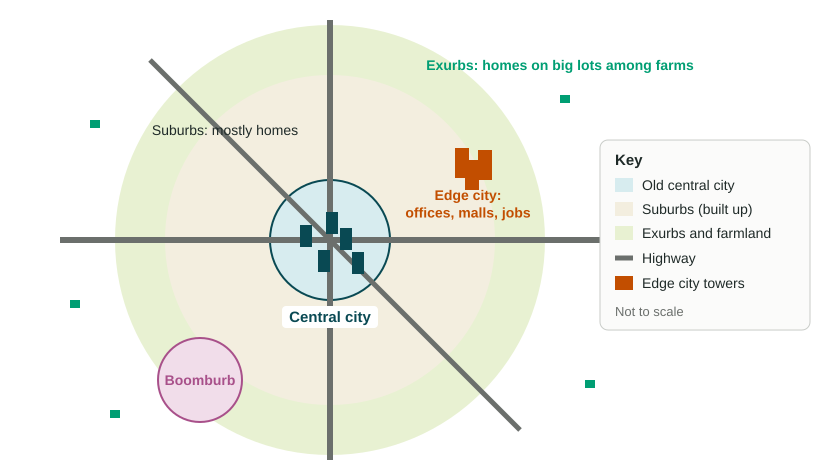

Cities grow in two ways: up and out. Some, such as Jakarta and Lagos, add millions of people a decade. Others, such as Atlanta, add fewer people but spread across far more land. This topic covers both.
Megacities and metacities
A megacity is an urban area with 10 million people or more. A metacity is an urban area with 20 million or more; UN-Habitat used the word in its State of the World's Cities 2006/7 report for cities of more than 20 million. Both numbers are conventions, chosen to make sorting easy, not natural limits. Learn them as 10 million and 20 million, and say where a figure comes from.
A city's population depends on where its edge is drawn. A city proper is the area inside the city limits; a metro area includes the built-up suburbs around it. In November 2025, UN DESA released World Urbanization Prospects 2025, which drew every city's edge the same way, by satellite measures of built-up land and density. Under that method, the world had 33 megacities in 2025, up from 8 in 1975, and 19 of them were in Asia. Jakarta ranked first with nearly 42 million people, Dhaka second and Tokyo third with about 33 million; Cairo was the only city outside Asia in the top ten. Older UN tables, which used each country's own city edges, put Tokyo first. The city did not shrink; the method changed. Compare cities only within one source and one edition.
At the global scale, the pattern is clear: most new megacities are in lower- and middle-income countries in Asia and Africa. Two forces drive them. Rural-to-urban migration brings young people from villages, and natural increase, with births well above deaths, adds more. UN DESA projects that Addis Ababa in Ethiopia and Dar es Salaam in Tanzania will pass 10 million people by 2050 (World Urbanization Prospects 2025). Many megacities in high-income countries, such as Tokyo and Osaka, grow slowly or not at all.
Suburbanization in the United States
Suburbanization is the movement of people, and later jobs and stores, from a central city to the suburbs, the lower-density communities around it. In the United States it took off after 1945. Three changes worked together. Government-backed home loans made a house cheaper to buy than an apartment to rent. The Interstate Highway Act of 1956 paid for fast roads from downtown to the edge. And most families could now own a car. On Long Island, New York, builders put up more than 17,000 nearly identical houses at Levittown between 1947 and 1951. Suburbs were not open to every family: many deeds and lenders shut Black families out, a history this course returns to in Topic 6.10.
Urban sprawl
Urban sprawl is the spread of a city at low density over a large area, usually across former farmland, with homes, stores and offices kept apart. Metro Atlanta, Georgia, is a well-known example: since the 1970s it has spread across many counties. Sprawl brings large yards and quiet streets, but it has costs. Each trip is longer and needs a car, so traffic and air pollution grow; farmland and forest are paved over; and roads, pipes and power lines must stretch farther for each household.
Edge cities, boomburbs and exurbs

As people moved out, jobs followed. This decentralization produced three new kinds of place.
| Term | What it is | Example (local scale) |
|---|---|---|
| Edge city | A suburban center of offices, malls and hotels, usually where highways meet, with more jobs than residents | Tysons, Virginia, near Washington, D.C. |
| Boomburb | A suburb that grew very fast into a large city of its own, yet is not the main city of its region | Mesa, Arizona, near Phoenix, which passed 500,000 people in the 2020 US census |
| Exurb | A rural-looking area beyond the suburbs, with homes on large lots, where most workers commute to the metro area | Small towns and farm roads 60 or more kilometers from downtown Atlanta |
The most common mistake about these words is to call an edge city a suburb. An edge city is where people go to work; a suburb is mostly where they go home.
Scale matters
At the global scale, the big story is megacity growth in Asia and Africa. At the national scale, across the United States, the story is outward spread: many metro areas added more land than people. At the local scale, one county can hold an old main street, a new edge city and fields marked for houses. A strong answer names the scale it is talking about.